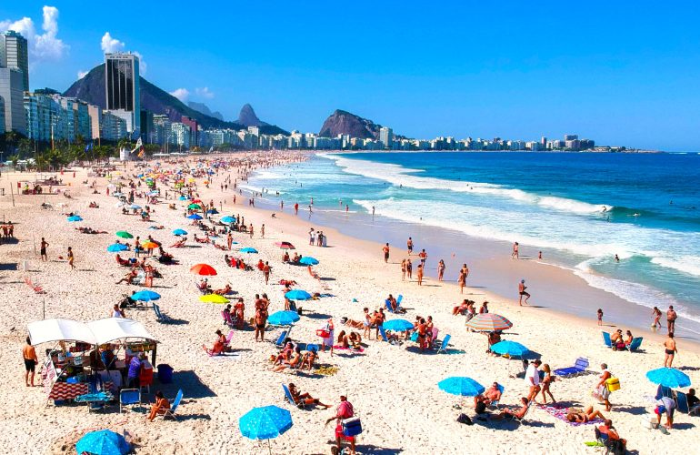
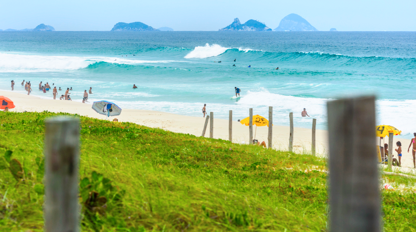
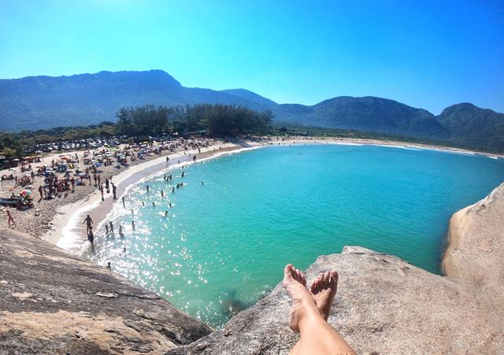

Home
Pão de Açúcar
Corcovado
Floresta da Tijuca
Praias
As praias são um dos motivos que fazem do Rio um destino tão atrativo. O mar, sempre encantador, proporciona um mergulho refrescante, ótimo para renovar as energias. A água é, sim, um pouco fria e talvez por isso elas sejam a principal atração do verão carioca!

Na Zona Sul, ficam as praias mais procuradas do Rio: Ipanema, Leblon e, claro, a famosa Copacabana. Seja para um mergulho, para praticar uma caminhada ou andar de bicicleta, essas praias são sempre uma boa pedida. Reserve um tempo de sua viagem para conhecê-las, tomar uma água de coco e curtir o visual. Em Copacabana, aproveite para tirar uma foto com a estátua de Carlos Drummond de Andrade e visitar o Forte de Copacabana, que tem uma vista linda. Em Ipanema, a dica é ficar na praia até o fim do dia para desfrutar da vista que a Pedra do Arpoador oferece durante o pôr do sol!


Já na Zona Oeste da cidade ficam as praias mais procuradas para o surf. São praias menos populares, mas incríveis e muitas vezes elas têm menos gente do que as praias da Zona Sul, então pode ser melhor para quem procura praias com menos movimento. A Barra da Tijuca tem uma praia enorme, com vários quiosques. Em sua extensão, a praia da Barra se torna Praia da Reserva, com pouquíssimo movimento. A praia do Recreio, também extensa, é outra boa opção para curtir um dia de sol na Zona Oeste.
Prainha e Grumari são incríveis para quem procura sossego. Elas ficam em áreas de proteção ambiental, estão cercadas por verde e durante a semana têm pouco movimento.